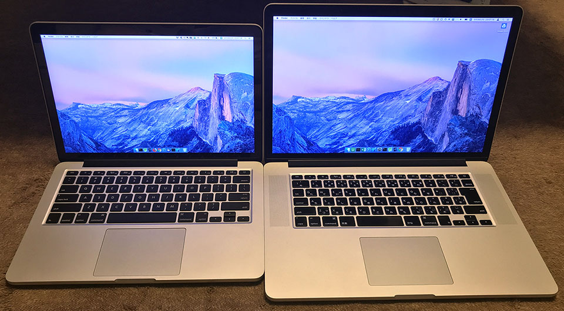
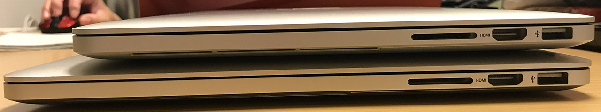
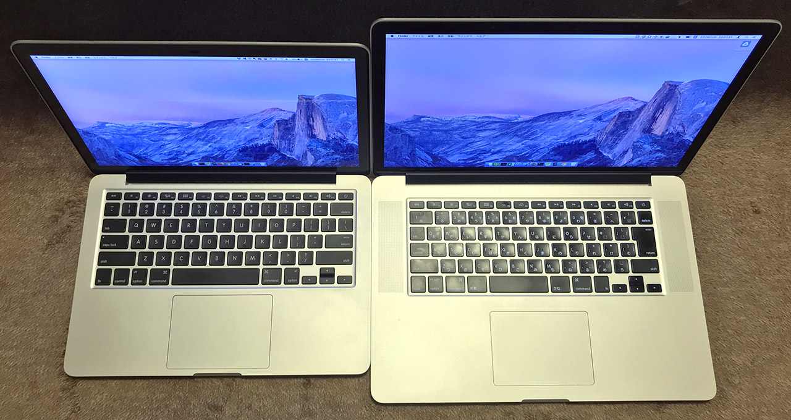

2015年モデルの MacBookPro の13インチと15インチを比較してみた
前回 MacBookAir 13インチと MacBookPro 13インチを比較したが、その第2弾、的な。
プライベートで使っている MacBookPro 13-Inch Early 2015 と、仕事で使っている MacBookPro 15-Inch Mid 2015 の外観を比較してみた。
2016年以降のモデルチェンジする直前、USB-C を採用する前の最後のモデルである。

↓正面。
↓背面。

↓向かって左面。ポートの類は13インチも15インチも同じだった。
↓向かって右面。

↓重ねてみる。

↓天面。

↓裏面。
↓キーボードとトラックパッド。15インチの方は JIS 配列だ。

↓キーボードとトラックパッドのサイズは同じ。
↓スタバでドヤってる時に周りに見せる面。
外観についてはこんなところ。
スペックについては公式の技術仕様を参照。
サイズに関してまとめると以下のようになる。
| - | 13インチ | 15インチ |
|---|---|---|
| 幅 | 31.4cm | 35.89cm |
| 奥行 | 21.9cm | 24.71cm |
| 高さ | 1.8cm | 1.8cm |
| 重量 | 1.58kg | 2.04kg |
ディスプレイを閉じた時の高さは両者同じ。15インチは2キロ超えだ。ちなみに13インチは2015年3月9日発売、15インチは2015年5月19日と、若干発売日が違う。だから Early 2015 と Mid 2015 なのね。
ついでに、2017年モデルのスペックは以下のとおり。
| - | 13インチ | 15インチ |
|---|---|---|
| 幅 | 30.41cm | 34.93cm |
| 奥行 | 21.24cm | 24.07cm |
| 高さ | 1.49cm | 1.55cm |
| 重量 | 1.37kg | 1.83kg |
どちらのモデルも、幅・奥行が1センチ前後ずつ小さくなり、重さも 200g 程度軽くなっている。Touch Bar が好みに合えば買い換えるかもしれないが、今のところは12インチ MacBook 欲しい。ｗ
- MacBook Pro (13-inch, 2017, Thunderbolt 3ポートx 2) - 技術仕様
- MacBook Pro (13-inch, 2017, Thunderbolt 3ポートx 4) - 技術仕様
- MacBook Pro (15-inch, 2017) - 技術仕様
以上。